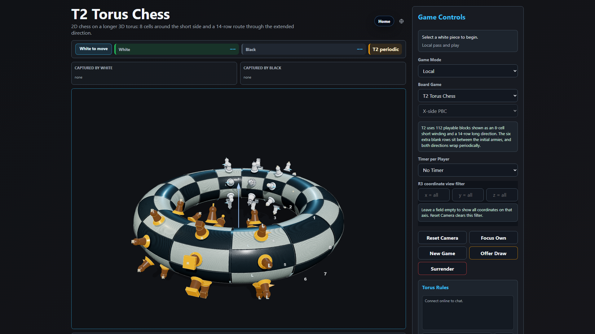
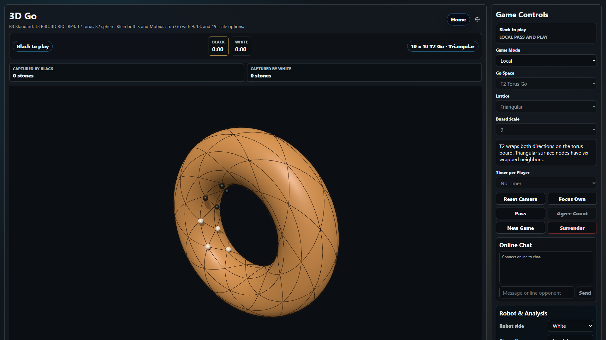
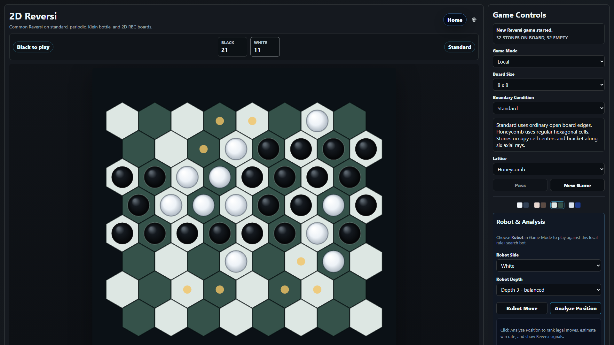
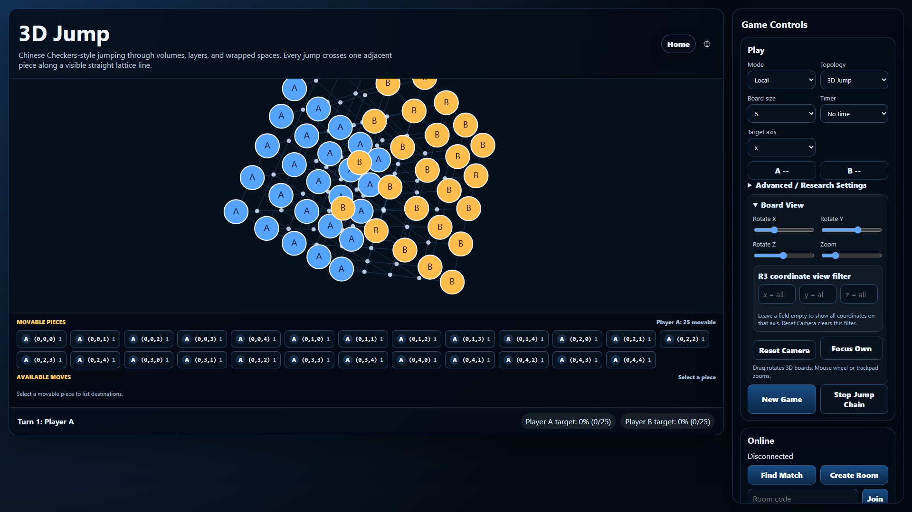
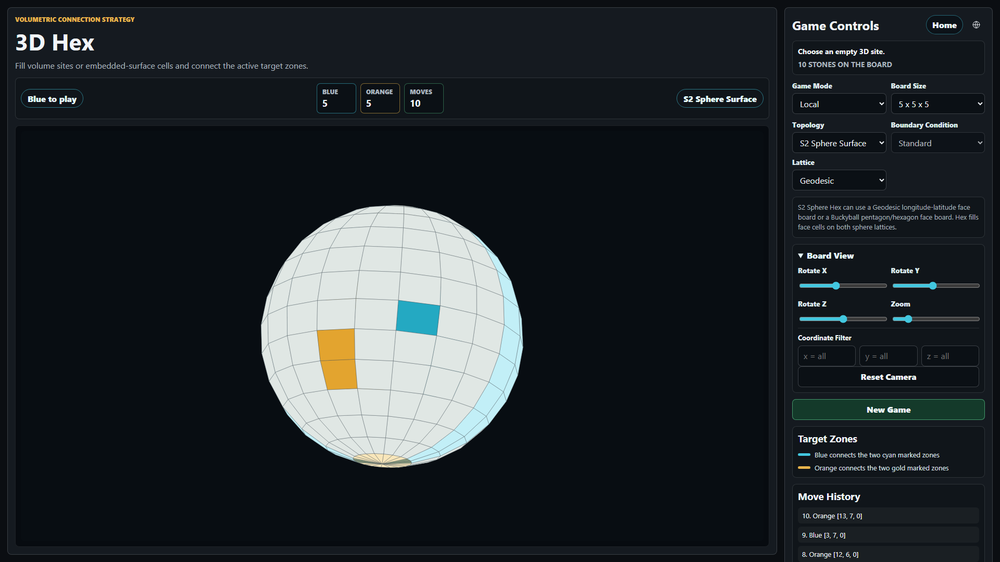

Official information page
Topological Board Game
A free experimental abstract strategy game where board games, Life systems, and scientific Labs are explored across different lattices, dimensions, boundaries, and topologies.
About This Game
Topological Board Game is an experimental strategy and research-play platform. It includes familiar board-game families such as Chess, Go, Reversi, Jump / Chinese Checkers, and Hex, then changes the board space: flat boards, cylinders, tori, spheres, higher-dimensional grids, periodic boundaries, twisted boundaries, and research-oriented discrete topological dynamics.
Life World explores cellular automata, artificial life, evolution, ecology, species interaction, mutation, noise, and topology-dependent growth. Topoboard Labs focuses on physics, mathematics, information, graph dynamics, and reproducible experiments.
This page is intentionally non-playable: it contains official project information, screenshots, privacy notes, and support links only.
中文簡介
Topological Board Game 是免費的實驗性抽象策略棋盤遊戲與研究遊玩平台，結合棋類、Life 世界、細胞自動機、拓撲、數學、物理、生物啟發系統與 Topoboard Labs。
Topological Board Game 是免费的实验性抽象策略棋盘游戏与研究游玩平台，结合棋类、Life 世界、细胞自动机、拓扑、数学、物理、生物启发系统与 Topoboard Labs。
Screenshots





Support
- Steam desktop release: Steam app page
- Community and bug reports: Discord page
- Source and issue tracking: GitHub repository
- Email: youxunzhangjim@gmail.com
Privacy
Topological Board Game uses only public client configuration in website builds. Do not put private API keys, Materials Project keys, Steam credentials, or other secrets in frontend files. Online rooms may use Firebase/Firestore configuration that is intended to be public client configuration, while security is controlled by Firestore rules.
For the full repository privacy text, see PRIVACY_POLICY.md on GitHub.